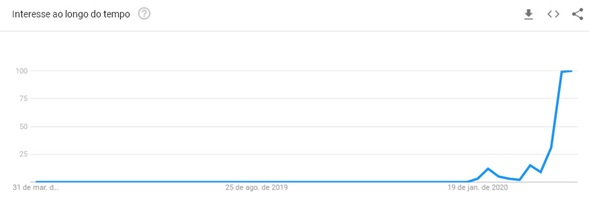

Covid-19 E a Internet
Introdução
Desde quando a pandemia da Covid-19 começou, tem obrigado à pessoas de todo o mundo a ficarem em casa, de quarentena a internet tem auxiliado essas pessoas a superarem isso, seja com notícias, com a possibilidade de home-office ou mesmo com a busca por entretenimento, com sites como youtube e os serviçoes de streaming. Auxiliou também nas compras online, fazendo muita gente a aderir essa modalidade de compras. Aprofundando um pouco mais, algum temas que podemos falar que a internet ajudou durante a pandemia foram: informação, home-office.
Informação
A velocidade com a qual ficamos sabendo sobre cada novo caso, a situação de cada cidade, de cada país se deve a Internet, sem ela estaríamos sempre defasados a atual situação, sempre estaríamos atrás da realidade. E a partir do momento que a palavra Corona Vírus começou a circular nos noticiários, a população mundial começou a procurar informações sobre isso, oque era essa nova doença, oque ela causava, como se prevenir. Duvidas como essa foram surgindo em todo o mundo, e as pesquisas sobre o assunto também, como mostra o gráfico abaixo.
Este um exemplo de como a internet está nos ajudando a superar a essa pandemia.
Home-office
Outro termo que ganhou os holofotes foi o home-office, coisa que era realidade para alguns mas completamente desconhecido para outras pessoas. As empresa tiveram que se adequar rapidamente ao modelo de HO assim como os funcionários, tornando-se um tema muito mais comum e uma realidade de muitos hoje em dia, ainda em temos de pandemia. E para essa realidade, a Internet (e as tecnologias que a usam) se tornaram indispensáveis, pois sem elas, seria inviável essa opção que garantiu o emprego de milhares de pessoas pelo mundo. Este gráfico mostra a quantidade de reuniões feitas pelas ferramentas durante a época de pandemia.
Isto mostra que o HO virou realidade para muito mais pessoas durante a pandemia.